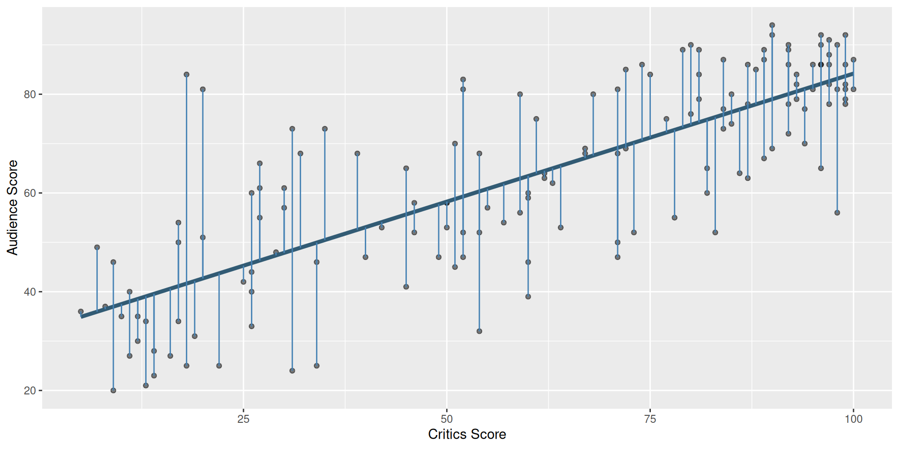
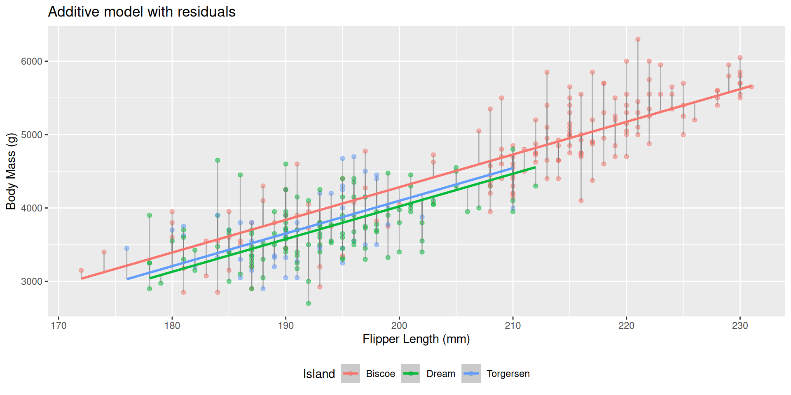

Model Selection
Lecture 17
While you wait…
Open up/keep working on AE13! (Goal: fit the interaction effects model).
Announcements
Office hours today: 3:30 - 5:30
Lab 4 Q8 part d: challenge!
Midterm scores are posted on gradescope: come by office hours or schedule a meeting with me to see your in-class exam!
Grading Reminders
Labs are equally weighted and the lowest is dropped
Midterm is worth 20% of your final grade
Final is worth 20% of your final grade
New policy: If you score better on the final exam than the midterm, we will weight the final exam higher in your final grade calculation.
Let us help you!!!
No question is too big or too small. Seriously!!
So many models…
We’ve seen a bunch of different linear models for predicting continuous outcomes
How can we tell how good they are? How can we choose between models?
Recall: Residuals
Recall: Least squares line
The residual for the \(i^{th}\) observation is
\[e_i = \text{observed} - \text{predicted} = y_i - \hat{y}_i\]
. . .
The sum of squared residuals is
\[e^2_1 + e^2_2 + \dots + e^2_n\]
. . .
The least squares line is the one that minimizes the sum of squared residuals
The concept still applies!
- Each model we fit since simple linear regression has minimized a sum of squared residuals.
. . .
- Even if we have more than one \(x\) (explanatory variable), we still predict one \(\hat{Y}\).
. . .
- The residual for the \(i^{th}\) observation is still
\[e_i = \text{observed} - \text{predicted} = y_i - \hat{y}_i\]
. . .
- Reminder: use
augmentto get predictions and residuals
Example

How do we pick between our models?
-
Over the past few days, we have fit a ton of linear models to predict penguins’ body mass.
Simple linear regression with flipper length
Regression with island
Additive model with island and flipper length
Interaction model with island and flipper length
. . .
- Wouldn’t it be nice if there was some score that would tell us which is the “best”??
Recall: R (no, not the language)
- Recall: Correlation (R) is a value between -1 and 1 that tells us how strong of a linear relationship two variables haves
- Now: \(R^2\) (between 0 and 1) gives the proportion of variability in the outcome explained by the model
- \(R^2\) is useful for quantifying the fit of a given model…
- … but \(R^2\) always goes up every time you add any predictor to a model, even if that predictor is silly and useless.
Adjusted \(R^2\)
- Adjusted \(R^2\) is an… adjusted version of \(R^2\) that penalized the number of predictors in the model
- This makes it very useful for comparing models!
- Philosophically, we want a model that both:
- Fits/predicts well and…
- Is as simple as possible (so we can understand it)
- Idea: Occam’s razor - when faced with many explanations/models, we should choose the least complex one that fits the data well.
How to implement?
Use the function glance to compute \(R^2\) and adjusted \(R^2\):
glance(bm_fl_island_fit)# A tibble: 1 × 12
r.squared adj.r.squared sigma statistic p.value df logLik AIC
<dbl> <dbl> <dbl> <dbl> <dbl> <dbl> <dbl> <dbl>
1 0.774 0.772 383. 386. 7.60e-109 3 -2517. 5045.
# ℹ 4 more variables: BIC <dbl>, deviance <dbl>, df.residual <int>,
# nobs <int>How to compare?
Just flipper length:
# A tibble: 1 × 12
r.squared adj.r.squared sigma statistic p.value df logLik AIC
<dbl> <dbl> <dbl> <dbl> <dbl> <dbl> <dbl> <dbl>
1 0.759 0.758 394. 1071. 4.37e-107 1 -2528. 5063.
# ℹ 4 more variables: BIC <dbl>, deviance <dbl>, df.residual <int>,
# nobs <int>Just island :
# A tibble: 1 × 12
r.squared adj.r.squared sigma statistic p.value df logLik AIC
<dbl> <dbl> <dbl> <dbl> <dbl> <dbl> <dbl> <dbl>
1 0.394 0.390 626. 110. 1.52e-37 2 -2686. 5380.
# ℹ 4 more variables: BIC <dbl>, deviance <dbl>, df.residual <int>,
# nobs <int>How to compare?
Additive model:
# A tibble: 1 × 12
r.squared adj.r.squared sigma statistic p.value df logLik AIC
<dbl> <dbl> <dbl> <dbl> <dbl> <dbl> <dbl> <dbl>
1 0.774 0.772 383. 386. 7.60e-109 3 -2517. 5045.
# ℹ 4 more variables: BIC <dbl>, deviance <dbl>, df.residual <int>,
# nobs <int>Interaction model:
# A tibble: 1 × 12
r.squared adj.r.squared sigma statistic p.value df logLik AIC
<dbl> <dbl> <dbl> <dbl> <dbl> <dbl> <dbl> <dbl>
1 0.786 0.783 374. 246. 4.55e-110 5 -2508. 5031.
# ℹ 4 more variables: BIC <dbl>, deviance <dbl>, df.residual <int>,
# nobs <int>Practice
Use AE-13 to practice!
Solutions will be posted today
A note about (multiple) linear regression
Think about in your projects!
Why use more variables?
- Real-world outcomes are influenced by many factors
- Multiple regression lets us:
- Include more explanatory variables
- Control for variables that might confound relationships
- This helps isolate the effect of interest
Example: Predicting Wages
You want to understand how gender affects wages.
wage ~ genderThis tells you the overall difference, but doesn’t control for education or experience.
Add control variables
wage ~ gender + education + experienceNow you’re comparing:
People with the same education and experience
But different gender
More fair, more realistic, more useful!
Key idea: Controlling for a variable
Holding a variable constant to isolate the effect of another
You’re asking:
“What is the effect of gender if education and experience are the same?”
This is what we mean by controlling for variables.
Why this matters
Without controlling, we might:
- Overstate or understate effects
- Confuse correlation with causation
- Miss important patterns
. . .
Multiple regression gives us a better picture of how the world really works.
Takeaway
When doing data analysis, think about what variables might be related to both your outcome and your explanatory variables!
Projects
Talk about:
Milestone 2 feedback
Milestone 3/4/5 requirements
Key reminders:
use
#| echo: falsein code chunksmake sure the website renders!!!!
READ THE REQUIREMENTS CAREFULLY!!!
COME TO OFFICE HOURS!!!